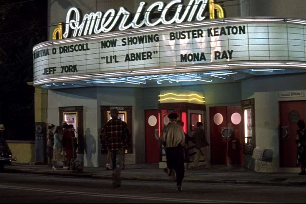
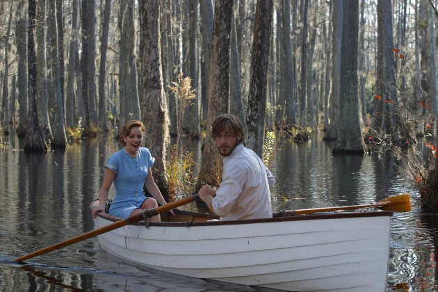
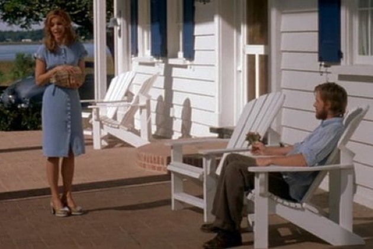

"The Notebook," based on Nicholas Sparks' novel, follows the passionate love story of Noah Calhoun and Allie Hamilton in the 1940s. Despite their different social statuses, they fall deeply in love over a summer in North Carolina. Circumstances tear them apart, but years later, they reunite, reigniting their intense connection and confronting the challenges posed by Allie's engagement to another man. The film beautifully weaves together past and present, exploring themes of enduring love and the power of memories to shape our lives.
"The Notebook" unfolds the poignant love story of Noah Calhoun and Allie Hamilton, set against the backdrop of 1940s North Carolina. Their passionate romance defies societal expectations and class differences as they embark on a summer affair filled with tender moments and heartfelt promises. However, their love is tested when Allie's parents intervene, forcing them apart and leading Allie to move away. Despite Noah's unwavering devotion and heartfelt letters, time and circumstances separate them for several years.
Years later, fate reunites Noah and Allie, now in different stages of their lives. Allie, engaged to another man, rediscovers Noah and confronts the enduring emotions that linger from their past. Their reunion sparks a journey of rediscovery, where they grapple with the choices made, the memories cherished, and the love that refuses to fade. "The Notebook" beautifully intertwines their youthful passion with the complexities of adult life, exploring themes of love's enduring power, the impact of choices, and the poignant tug-of-war between destiny and personal agency.
"The Notebook" employs visually evocative cinematography to bring to life the enchanting world of 1940s North Carolina where Noah and Allie's love story unfolds. The film captures the rustic charm of the countryside, with sweeping shots of sunlit fields, serene lakes, and quaint, Southern architecture. These visuals not only serve as a picturesque backdrop but also mirror the purity and innocence of Noah and Allie's initial romance, evoking a sense of nostalgia and longing.
The cinematography in "The Notebook" is also adept at conveying the emotional depth of the characters' relationships. Intimate close-ups and lingering gazes between Noah and Allie underscore their intense connection, while subtle changes in lighting and framing reflect the changing dynamics of their love over time. Whether depicting moments of joy, heartache, or longing, the visual language of the film enhances the audience's emotional experience, making it a compelling exploration of love's enduring power and the profound impact of memories.
"The Notebook," a romantic drama film based on Nicholas Sparks' novel, was primarily filmed in various locations in South Carolina, USA. Here are some key filming locations:
Charleston, South Carolina: Located on King Street in Charleston, this historic theater was used for the scene where Noah (Ryan Gosling) takes Allie (Rachel McAdams) on a date to see a movie.
Cypress Gardens: Located near Charleston, Cypress Gardens was used for several pivotal scenes in the film, including the iconic rowboat scene through the swamp with the swans.
Mount Pleasant, South Carolina: Boone Hall Plantation served as the location for the grand summer house where Allie (Rachel McAdams) spends time during her summer in the South. The plantation's picturesque grounds and historic mansion provided an ideal setting for depicting the opulent yet serene environment of the Hamilton family estate.
"The Notebook," directed by Nick Cassavetes and based on Nicholas Sparks' novel, concludes with a poignant and emotional resolution. The story comes full circle as an elderly Noah (James Garner) and Allie (Gena Rowlands) are revealed to be the young couple from the beginning of the film. Despite Allie's struggles with dementia, Noah reads their love story to her daily, hoping to rekindle her memories. In a deeply moving climax, Allie briefly remembers their life together, reaffirming the enduring power of their love. The film ends on a bittersweet note with Noah and Allie passing away peacefully in each other's arms, a testament to the profound bond they shared that transcends time and memory. "The Notebook" resonates as a timeless tale of love, loss, and the enduring impact of soulmates finding each other against all odds.